在女子体操的世界，只要西蒙娜·拜尔斯（Simone Biles）站上赛场，夺金热门里就不会没有她的名字。
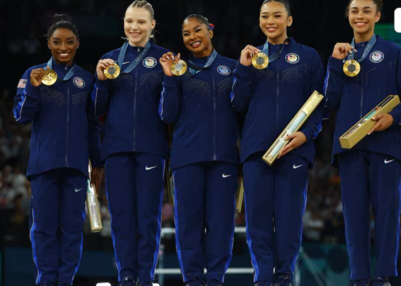
在巴黎奥运会，这位全球体操的传奇人物再度登场亮相。拜尔斯先是在个人全能决赛，分别在跳马、平衡木、自由体操3个项目均拿下全场最高分，最终以59.131分夺冠，时隔8年再度在全能项目站上奥运之巅。而此前，她已经和美国的队友们一起拿下了团体赛的金牌。
边拿金牌边反击特朗普
在巴黎奥运会获得第二枚个人全能金牌后，拜尔斯也通过社交媒体平台对正在进行竞选的特朗普进行了抨击，她在推特上写道：“我爱我的黑人工作”。
拜尔斯在社交媒体平台上的帖子回应了特朗普——这位共和党总统候选人最近有争议的言论，即外国移民正在“抢走美国黑人的工作”（I Love my Black Job）。
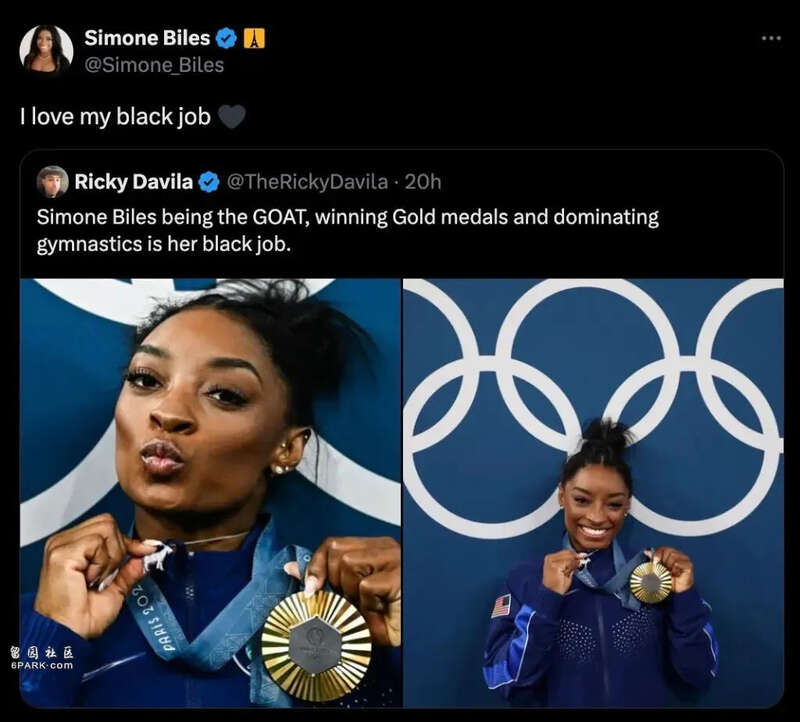
在最近的集会上，特朗普对自己的选民发出警告：“他们（外来移民）现在正在接手黑人的工作，可能是18人、19人，但更可能是2000万人。他们正在替代美国黑人的工作，他们正在替代西班牙裔美国人的工作，如果不阻止拜登连任，你们将会看到美国历史上最糟糕的就业情况。”
在7月31日出席全美黑人记者协会年会时，特朗普在与三名记者的问答环节中被要求澄清他所说的“黑人工作”（Black jobs）是什么意思。
速来反移民的特朗普解释说：“黑人工作是指任何有工作的人。事情就是这样。任何人——他们都在剥夺黑人的就业机会。他们进来了，他们来了，他们入侵了。”
全黑人的奥运体操领奖台
随着巴黎体操奥运最后一项比赛结束，巴西选手丽贝卡·安德拉德夺得金牌，美国的拜尔斯和乔丹·奇利斯分别获得银牌和铜牌，拜尔斯与队友奇利斯则用这样一种方式，再度回击了特朗普。
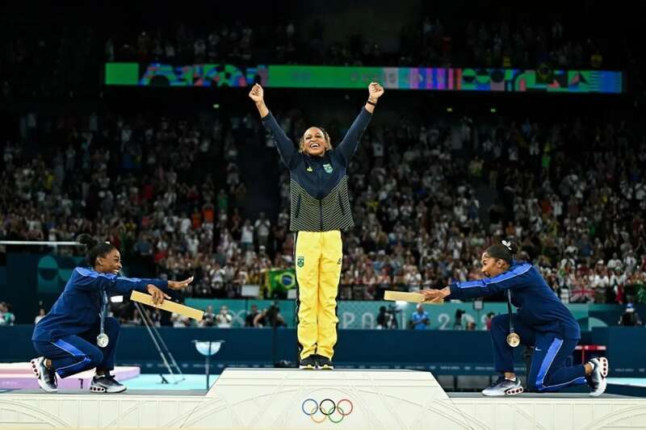
她与队友一起，在安德拉德登上领奖台时，向她做出了鞠躬致意。为此，拜尔斯解释说：“首先，领奖台上全是黑人，这让我们非常兴奋。但后来乔丹（奇利斯）问我，‘我们应该向她鞠躬吗？’我说，‘当然。’所以我们说，‘我们现在就鞠躬吗？’然后，这就是我们这样做的原因。
拿到铜牌的奇利斯说：“说一次，是的，这是一个全黑人领奖台。”
拜尔斯东京低迷引巨大争议
不难预见的是，拜尔斯很可能会在社交媒体上，继续对特朗普进行不断的开火。而让她火力全开的另一个原因，则是一段旧视频再次浮出水面：特朗普的竞选副手万斯（JD Vance）对于她在东京奥运会上的退赛进行抨击。
3年前的东京奥运，拜尔斯已经是美国女子体操的领军人物。当时她手握4枚奥运金牌和19枚世锦赛金牌，被视为带领美国队夺金的领袖。
然而，就是在东京的赛场上，这位“体操女王”却令人意外地遭遇了滑铁卢。当时，在体操女团决赛的首轮比赛中，拜尔斯在第一轮跳马落地就出现失误，然后和队医一起离开了比赛场地，没有再登场。
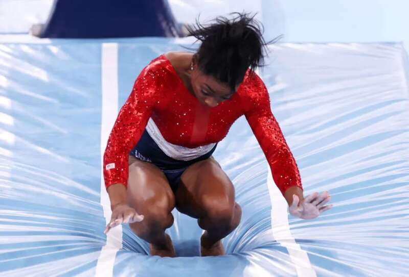
2021年东京奥运会，体操团体赛第一轮的跳马比赛上，拜尔斯在完成一周半旋转后匆忙下台，险些摔倒。而她原本的计划是做一个阿玛纳尔（Amanar）：阿玛纳尔是跳马比赛中最难的动作之一，需要先侧手翻登上跳马台，然后后空翻旋转两周半。
作为世界上最好的跳马选手之一，她的失误和低分让人错愕。
所以，拜尔斯身上到底发生了什么？这位传奇选手的突然崩盘，立刻成为震惊整个体操界的最大话题，拜尔斯自己则将问题归结于心理原因。
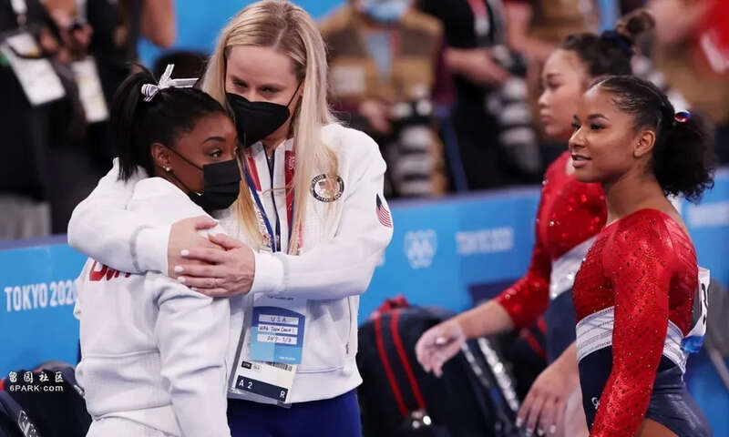
拜尔斯称自己被某种“眩晕症”困扰，或者是在空中“失去意识”。拜尔斯说：“我（在空中）分不清上下，无法控制自己的身体，这是一种疯狂的感觉。”由于害怕这样的情况会导致自己严重受伤，她不再敢于去完成那些已经练习过无数次的动作。
随后，拜尔斯宣布因个人心理健康问题退赛。最终，俄罗斯体操队战胜美国队，获得女子体操团体赛冠军。
在赛后的发布会上，拜尔斯说：“我认为要把心理健康放在首位，如果不这样做，你就无法取得你想要的成功。因此，有时候为了关注自己，即使是放弃重要的比赛也是可以的，因为这表明你是一个多么强大的竞争者和人，而不仅仅是硬撑过去。”
拜登为拜尔斯颁发奖牌
在拜尔斯退出东京奥运比赛的一年后，美国总统拜登，向这位体操冠军颁发了总统自由勋章。据白宫称，这位获得过七枚奥运奖牌（2022年）的运动员不仅因其在体操方面的天赋而获奖，还因为她为运动员的“心理健康和安全、寄养系统中的儿童以及性侵犯受害者”发声。
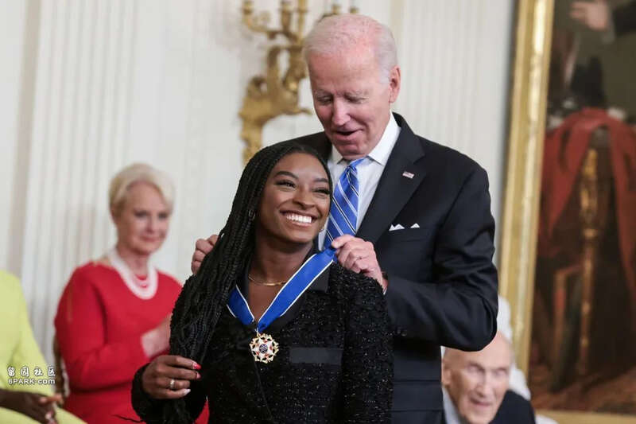
拜尔斯成为有史以来获得这一荣誉的最年轻的人。而她也称自己的退出是“伟大的胜利”：“退出奥运会本身就是一种胜利。我知道很多人认为我失败了，因为他们希望我带着五六枚奖牌退赛，但退出奥运会是我最大的胜利。”
总统自由勋章是美国最高的平民荣誉，拜登本人曾被时任总统奥巴马授予该勋章。
JD万斯炮轰退赛的拜尔斯
但美国依然有不少的反对者，称她的退赛是软弱的表现！而抨击她的人中，就包括刚被特朗普提名为副总统候选人的JD·万斯，他在当时发表了一段言论，直接抨击了退赛的拜尔斯：“让我觉得奇怪的是……我们试图把拜尔斯退出奥运的这个非常悲剧性的时刻，变成一种英雄行为！我认为，这反映出我们的疗愈文化存在问题，我们试图赞扬人们，不是因为他们的坚强时刻，也不是因为他们的英雄行为，而是因为他们最软弱的时刻。”
万斯在自传《乡下人的悲歌》中，展现了自己作为一个白人的底层人士，如何借助当兵，接受高等教育，突破原生家庭梦魇、制度性贫困后完成阶级跃升“成功”的案例。也许正是自己的经历，让他认为没有什么是努力完不成的，正视心理健康是“软弱的”。
另一位著名的批评者，是英国的主持人、前美国达人秀评委皮尔斯·摩根（Piers Morgan），他表示：“拜尔斯，对不起，但是仅仅因为你不开心而放弃比赛一点都不悲剧、一点都不英勇——你让你的队友、你的粉丝、你的国家失望了。”
拜尔斯坦言，自己一度计划在东京奥运会之后就退役。彼时在许多人的猜测中，这似乎就是故事的终结。毕竟，在过往的时光里，这位“体操女王”的名将经历了太多：童年的磨难、性侵事件的阴影、这才会让她在东京奥运会巨大的压力之下，出现身体和心理问题……
阴暗的童年与美国体操队性侵事件
童年时，作为家中四个兄弟姐妹中的第三个，她从没见过自己的亲生父亲——一位抛弃了家人的“瘾君子”。
她的亲生母亲也同样沉沦于毒品和酒精，她不得不因此被“寄养”，6岁那年，她和妹妹一起正式被外公外婆收养。对于体操项目而言，6岁才开始接触训练已经算是较晚，但得到舞台的她，最终展现了自己的天赋。
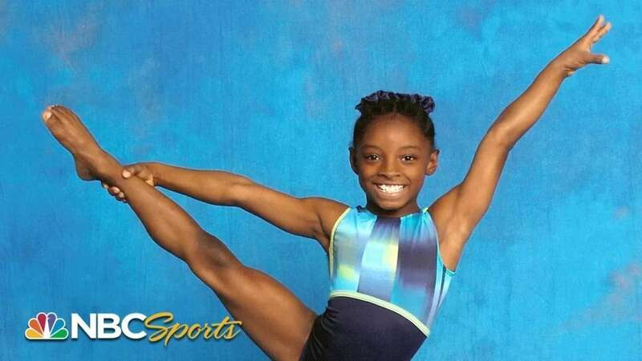
全身心投入体操的拜尔斯，生活的内容非常单调乃至枯燥，那就是在体操馆里一遍遍的去练习各种动作。天赋异禀的她如同开了挂一样势不可挡，14岁时就在全美级别的比赛中拿下了平衡木和跳马的冠军。15岁的她无论是比赛成绩还是体操难度等级，都已足以参加伦敦奥运，只是因为年龄未满，只能进入美国体操少年队。
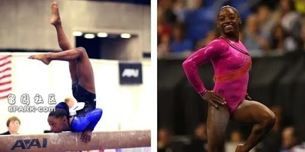
更多的关注度和更大的舞台，随之而来的也是更大的压力。面对自己所创造的一项项纪录，她曾吐露心声：“我的目标不是超越那些纪录，但在记者写出来之后，那就成了我的‘任务’。有时你无法选择自己的目标，因为有那么多人在看着你。就算我打破了奥运纪录，前面也只会有更多的目标。”
在这样的高压环境中，性侵事件更是带来了难以磨灭的痛苦。2016年，美国媒体曝光了美国体操界大范围存在的性侵事件，国家队乃至奥运选手也没有幸免。美国体操队医拉里·纳萨尔（Larry Nassar），曾多次在训练中，对包括拜尔斯 (Simone Biles)、麦凯拉·马罗尼 (McKayla Maroney)，麦琪·尼克尔斯 (Maggie Nichols)，进行性侵犯。
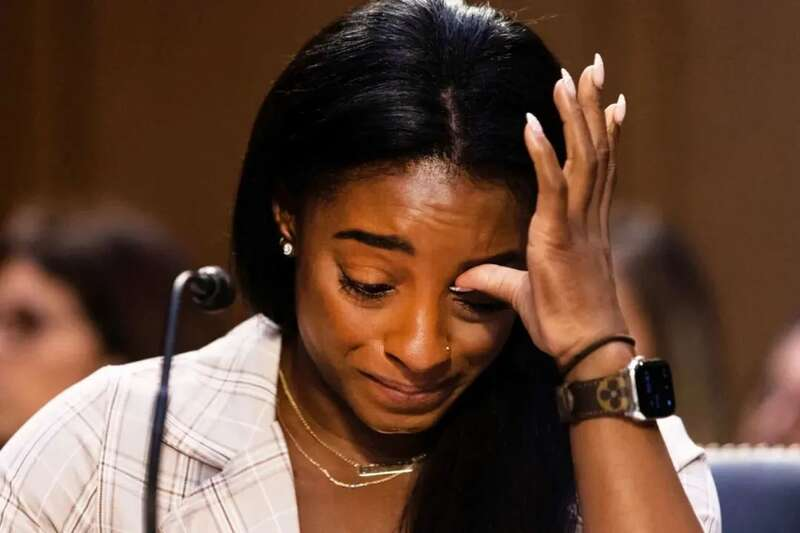
纳萨尔要求女队员们换上宽松的短裤并且不穿内裤，因为这会让他的“工作更容易”，之后，他就将手指伸向了这些队员们的私处…丑闻曝光后，相关责任人被调查判刑，管理机构高层也被替换，但给运动员带来的伤害依然存在。
这些痛苦经历，无疑也是造成拜尔斯心理问题的重要原因，“当我为东京奥运会梦想而努力时，我将不得不反复回到我曾被性侵的训练场所。有时候训练正在进行当中，那些经历就突然浮现了出来，我只能暂时离开训练馆。”
在漫长的调查过程中，拜尔斯没有回避，而是多次在听证会等公开场合直面过往，指证那些恶魔犯下的罪孽，抨击管理者长期以来的缺位和纵容。这位体操明星的勇气，也鼓励了许多受害者站出来指认犯罪者，说出自己的痛苦回忆。
这一切的一切，最终成为了压倒拜尔斯内心的巨石，让她疲惫不堪，一度想退役了之。
那些阴暗的过往打不倒她
当人们感叹拜尔斯的传奇生涯或戛然而止时，拜尔斯却给出了相反的答案。在社交媒体上，她的众多支持者们依然继续为她送上鼓励，这也让拜尔斯逐渐打消了就此彻底告别职业体操的念头。
但即便不说再见，她还是选择给自己放个假。她给自己安排的“治疗”，包括暂时离开职业体育圈，花时间去接受专业人士的帮助。对于拜尔斯来说，离开训练房和赛场，用大把时间去享受“普通人”的日常生活，成为治愈她的新方式。
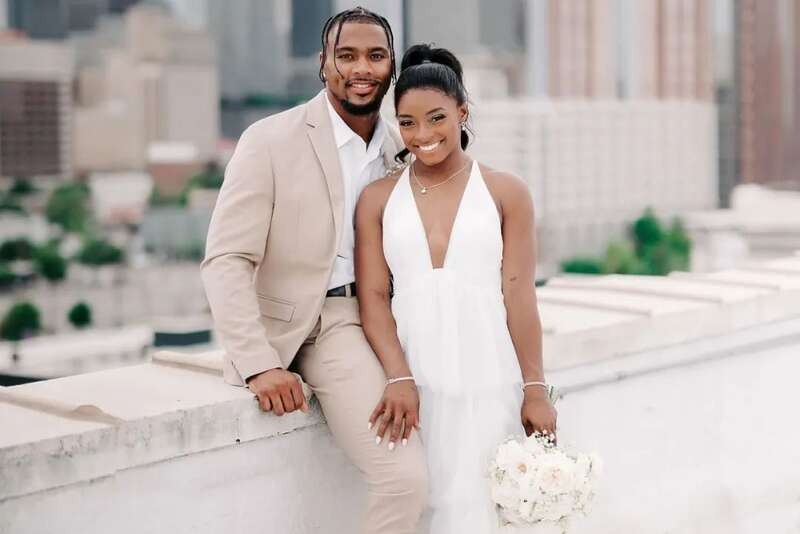
去年4月，26岁的拜尔斯与美国职业橄榄球球星乔纳森·欧文斯结婚，走入了人生的新阶段。用她自己的话来说，当生活迎来了种种改变，自己的精神状况也终于不再像过去那么紧绷，“我曾经嫁给了体操，而现在它只是我每一天生活的一部分。”
淡出两年之后，重新找回自我的拜尔斯，在2023年的比利时安特卫普世锦赛迎来国际大赛复出，一举包揽4枚金牌和1枚银牌，宣告了自己的强势回归。
如今的拜尔斯，面对竞技体育有了更为健康的心态，“我每天早上醒来开始训练，然后为我自己表演，没有人强迫我这么做。”
她也不在意外界是否会因为三年前的意外退赛而继续批评和质疑自己，“即便我再次这么做，又能怎么样？我已经面对这些（舆论压力）三年了。”战胜伤痛，战胜黑暗的过往，如今归来的拜尔斯，比以往任何时候都更加坚强。
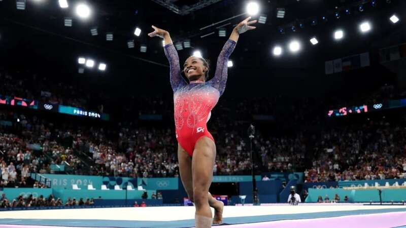
在巴黎奥运上，拜尔斯延续着自己势不可挡的势头，在帮助美国队重新拿下女子团体冠军之后，个人也以统治级别的表现，拿下了女子全能与跳马的两块金牌。
拜尔斯被广泛的认为是有史以来最伟大的美国体操运动员，拜尔斯共获得11枚奥运奖牌，其中7枚为金牌，是美国历史上获得奖牌最多的体操运动员。她也是第一位在非连续奥运会上获得两枚金牌的奥运体操运动员。
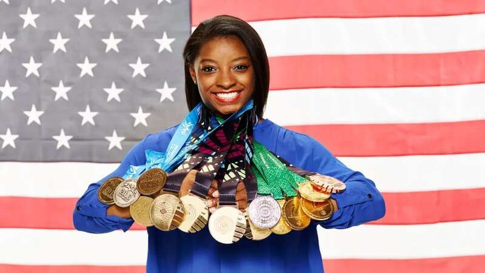
当然，除了所有的奖牌之外，拜登为拜尔斯颁奖时所发表的讲话，则归纳出拜尔斯作为一个运动员之外的魅力：“当我们看到她参加比赛时，我们看到了无与伦比的力量和决心、优雅和勇敢，她是一位开拓者和榜样，当她站在领奖台上时，我们看到了她——绝对的勇气，将个人痛苦转化为更大的目标，站出来为那些无法为自己站出来的人说话。